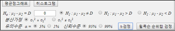

8장 두 모집단 모수의 가설검정
8.2 두 모분산 가설검정
8.3 두 모비율 가설검정
[8장 pdf]
이 장에서는 두 모집단 모수를 비교하는 가설검정에 대하여 설명한다.
- 두 모평균 가설검정 :
독립표본인 경우와 대응비교인 경우
- 두 모분산 가설검정
- 두 모비율 가설검정
8.1 두 모평균 가설검정
두 모집단의 평균을 비교하는 예들은 우리 주변에 아주 많이 있다.
1) 금년도 대졸 사원의 초임이 남녀별로 차이가 있을까?
2) 두 생산라인에서 생산되는 제품들의 무게에 차이가 있을까?
3) 타자속도를 증가시키기 위하여 타자수에게 실시한 특별교육이 과연 타자속도의 증가를 가져 왔을까?
이와 같은 두 모집단의 평균(\(μ_1 , μ_2\))에 대한 비교는 모평균의 차 \(μ_1 - μ_2\)
가 0 보다 큰가, 작은가, 같은가 하는 가설을 검정함으로써 가능하다. 이러한 두 모평균의 비교는
각 모집단에서 추출된 표본들이 서로 독립적으로 추출되었을 경우와 아닌 경우(대응비교라 함)에 따라
검정방법이 다르다.
독립표본
일반적으로 모평균에 대한 가설검정에서 대립가설의 형태는 크게 다음 세 가지이다.
1) \( \; H_0 : \mu_1 - \mu_2 = D_0 \)
\(\quad\,\, H_1 : \mu_1 - \mu_2 > D_0 \)
2) \( \; H_0 : \mu_1 - \mu_2 = D_0 \)
\(\quad\,\, H_1 : \mu_1 - \mu_2 < D_0 \)
3) \( \; H_0 : \mu_1 - \mu_2 = D_0 \)
\(\quad\,\, H_1 : \mu_1 - \mu_2 \ne D_0 \)
여기서 \(D_0\)는 모평균 차이에 대한 값을 의미한다. 모집단에서 서로 독립적으로 표본을 추출하였을 때 모평균의 차
\( \mu_1 - \mu_2 \)의 추정량은 표본평균의 차 \(\small \overline X_1 - \overline X_2 \)이며, 모든 가능한
표본평균의 차는 표본이 충분히 클 경우 근사적으로 평균이 \( \mu_1 - \mu_2 \) 이고 분산이
\( \frac{\sigma_1^2}{n_1} + \frac{\sigma_2^2}{n_2} \)인 정규분포를 따르게 된다.
두 모집단의 분산(\(\sigma_1^2 ,\; \sigma_2^2 \))은 대개 알려져 있지 않으므로 분산의 추정치를 이용하여
검정을 하여야 하는데, 두 모분산이 같은 경우와 두 모분산이 다른 경우 검정방법이 약간 차이가 난다. 두 모집단이
정규분포를 따르고 두 모분산이 같다는 가정 하에 두 모평균의 차이가 \(D_0\) 라는 가설검정은 다음과 같은 통계량을 사용한다.
$$ \small
\frac { ({\overline x}_1 - {\overline x}_2 ) - D_0 }{\sqrt{\frac{s^2_p}{n_1} +\frac{s^2_p}{n_2} } }
\qquad \text{여기서 } s^2_p = \frac{(n_1 -1 )s^2_1 + (n_2 -1)s^2_2}{n_1 + n_2 -2}
$$
\(s^2_p\)은 모분산의 추정량으로 \( s^2_1 \)과 \( s^2_2 \)에 표본의 크기를 가중치로 모분산을 추정한 것으로
공통분산(pooled variance)이라 한다. 즉, 공통분산은 두 모집단의 분산이 같다고 가정했으므로
두 분산의 표본크기에 비례한 가중평균이다. 위의 통계량은 자유도가 \(n_1 + n_2 -2\)인 t 분포를 하는데
이를 이용하여 두 모평균의 차이에 대한 검정을 다음과 같이 할 수 있다.
표 8.1 두 모평균의 가설검
- 표본이 독립이고, 두 모집단이 정규분포를 따르고, 두 모분산이 같은 경우
| 가설형태 |
산텍기준 |
1) \( \; H_0 : \mu_1 - \mu_2 = D_0 \)
\(\quad\,\, H_1 : \mu_1 - \mu_2 > D_0 \) |
만일 \( \frac { ({\overline x}_1 - {\overline x}_2 ) - D_0 }{\sqrt{\frac{s^2_p}{n_1} +\frac{s^2_p}{n_2} } } > t_{n_1 + n_2 -2; α} \), \( H_0 \) 기각 |
2) \( \; H_0 : \mu_1 - \mu_2 = D_0 \)
\(\quad\,\, H_1 : \mu_1 - \mu_2 < D_0 \) |
만일 \( \frac { ({\overline x}_1 - {\overline x}_2 ) - D_0 }{\sqrt{\frac{s^2_p}{n_1} +\frac{s^2_p}{n_2} } } < - t_{n_1 + n_2 -2; α} \), \( H_0 \) 기각 |
3) \( \; H_0 : \mu_1 - \mu_2 = D_0 \)
\(\quad\,\, H_1 : \mu_1 - \mu_2 \ne D_0 \) |
만일 \( \left | \frac { ({\overline x}_1 - {\overline x}_2 ) - D_0 }{\sqrt{\frac{s^2_p}{n_1} +\frac{s^2_p}{n_2} } } \right | > t_{n_1 + n_2 -2; α/2} \), \( H_0 \) 기각 |
참고: 표본의 크기가 충분히 크면 (\(n_1 > 30, n_2 >30 \)) t 분포는 표준정규분포에 근사하므로,
이 경우 위의 선택기준은 표준정규분포를 사용하여도 된다.
두 모집단의 분산이 다를 경우 모집단이 정규분포를 따르더라도 검정통계량
$$ \small
\frac { ({\overline x}_1 - {\overline x}_2 ) - D_0 }{\sqrt{\frac{s^2_1}{n_1} +\frac{s^2_2}{n_2} } }
$$
은 t 분포를 따르지 않는다. 두 모집단의 분산이 다른 경우 두 모평균의 가설검정을 Behrens-Fisher 문제라고 한다.
이 문제를 해결하기 위한 여러 가지 방법이 연구되었는데, 표 8.1의 선택기준에서 대개 근사적으로 자유도
\(\phi\)인 t 분포를 이용하여 가설검정을 하는 Satterthwaite 방법을 사용한다. 여기서 자유도 \(\phi\)는 다음과 같이 계산한다.
$$
\phi = \frac { \left( \frac{s_1^2}{n_1} + \frac{s_2^2}{n_2} \right)^2 }
{ \frac { \left( \frac{s_1^2}{n_1} \right)^2 } {n_1 -1} + \frac { \left( \frac{s_2^2}{n_2} \right)^2 } {n_2 -1} }
$$
『eStatU』를 이용하여 두 모평균의 가설검정을 쉽게 할 수 있다.
🎲 예 8.1
어느 공장에서 두 기계가 한 과자를 생산하는데 포장된 과자의 정량은 270g이다. 두 기계에서 생산 포장된
과자의 무게를 비교하기 위하여 각각 표본을 추출하였다. 기계1에서 추출된 15개 과자의 무게 평균은 275g, 표준편차는 12g이었고, 기계2에서 추출된 14개 과자의 무게 평균은 269g, 표준편차는 10g 이었다. 두 기계에서 생산된 과자의 무게가 차이가 있는지 5％ 유의수준으로 『eStatU』를 이용하여 가설검정 하자. 두 모분산은 같다고 가정하자.
풀이
『eStatU』에서 '가설검정 : \(μ_1 , μ_2\)'를 선택하면 [그림 8.1]과 같은 화면이 나타난다.
여기에서 두 모분산을 같은 것으로 체크하고, 유의수준을 1%, 독립표본을 체크한 후, 표본크기
\(n_1 , n_2\), 표본평균 \(\small \overline x_1 , \overline x_2\), 표본분산
\(s_1^2 , s_2^2\)을 입력한다. [실행] 버튼을 누르면 [그림 8.2]와 같이 두 모평균 차의 구간추정과 가설검정 결과가 화면이 나타난다.
[Testing Hypothesis : Two Population Means μ1, μ2]
[그림 8.2] 『eStatU』 두 모평균 가설검정의 결과
『eStat』을 이용하여 두 모평균의 가설검정을 할 수 있다.
🎲 예 8.2
금년도 대졸 취업자의 남녀 모집단에서 각각 10명씩 표본을 추출하여 월평균 임금을 조사하니 다음과 같다. (단위 만원)
남자 272 255 278 282 296 312 356 296 302 312
여자 276 280 369 285 303 317 290 250 313 307
두 모분산이 같다고 가정하고 남녀 월평균 임금이 같은지 유의수준 5%로 『eStat』을 이용하여 가설검정 하자.
풀이
『eStat』에서 시트에 [그림 8.3] 같이 두 개의 변량에 성별과 임금을 입력한다. 이와 같은 데이터 입력은 대부분의 통계패키지와 유사한 형태이다. 데이터를 입력한 후 두 모평균 가설검정 아이콘 을 클릭하여 나타나는 변량선택박스에서 '분석변량'을 V2, 'by 그룹' 변량을 V1으로 선택하면 두 모집단의 표본평균을 비교할 수 있는 신뢰구간 그래프가 나타난다([그림 8.4]).
[그림 8.4] 두 모평균의 가설검정의 점그래프와 각 그룹별 평균-신뢰구간 그래프
그래프 창 밑의 [그림 8.5]와 같은 선택사항창에서 원하는 검정을 위한 평균차 D = 0을 입력하고
분산가정을 \(\sigma_1^2 = \sigma_2^2\) 을 선택하고, 유의수준 5%를 선택한 후
[t 검정] 버튼을 누르면 [그림 8.6]과 같은 두 모평균 가설검정 결과 그래프와 [그림 8.7]과 같은 검정결과가 나타난다.

[그림 8.5] 두 모평균의 가설검정을 위한 선택사항
선택사항에서 \(\sigma_1^2 \ne \sigma_2^2\) 을 선택하고 [t 검정] 버튼을 누르면 두 모분산이 다르다고 가정한 경우의 가설검정 결과를 볼 수 있다.
[그림 8.6] 두 모평균의 가설검정 결과 그래프
[그림 8.7] 두 모평균의 가설검정 결과 – 모분산이 같다고 가정
『eStatU』에서 [그림 8.8]과 같이 데이터를 입력하고 [실행] 버튼을 누르면 같은 결과를 얻을 수 있다.
대응표본
두 모평균을 비교하는 지금까지의 가설검정에서는 두 표본이 서로 독립적으로 추출된 경우를 다루었지만 어느 경우에는
두 표본을 독립적으로 추출하기가 힘들거나, 독립적으로 추출하였을 때 각 표본개체의 특성이 너무 차이가 나서
결과분석이 무의미할 때가 있다. 예를 들면, 타자수에게 타자속도를 증가시키기 위한 특수교육을 시킨 후 과연
이 교육이 타자속도 증가에 효과가 있었는가 알아보고 싶다고 하자. 이 때 교육 전과 교육 후에 서로 다른 표본을
추출하면 개인의 차가 심하기 때문에 교육의 효과를 측정하기가 어렵다. 이러한 경우 교육 전에 표본추출되어
속도를 측정한 타자수에 대하여, 교육 후에 속도를 측정하여 비교하면 특수교육의 효과를 잘 알아 낼 수가 있다.
이렇게 한번 추출된 표본에 유사한 실험을 하는 대응표본(paired sample)으로 사용하여 두 모집단의
평균을 비교하는 가설검정을 대응비교(paired comparison)라고 한다.
대응비교일 때는 관찰된 쌍(pair)의 차이(\(d_i\))를 계산해서 평균(\(\small \overline d \))과
표준편차(\(s_d\))를 구한다.
표 8.2 대응비교를 위한 데이터와 통계량
모집단 1의 표본
\(x_{i1}\) |
모집단 1의 표본
\(x_{i2}\) |
차이
\(d_{i} = x_{i1} - x{i2}\) |
\(x_{11}\)
\(x_{21}\)
\(\cdots\)
\(x_{n1}\) |
\(x_{12}\)
\(x_{22}\)
\(\cdots\)
\(x_{n2}\) |
\(d_1 = x_{11} - x_{12}\)
\(d_2 = x_{21} - x_{22}\)
\(\cdots\)
\(d_n = x_{n1} - x_{n2}\) |
|
|
\(d_i\)의 평균 : \(\overline d = \frac{1}{n} \sum d_i \)
\(d_i\)의 분산 : \(s_d^2 = \frac{1}{n-1} \sum (d_i - \overline d )^2 \)
|
두 모집단이 평균이 같은 정규분포일 때 \(\frac{\overline d}{\frac{s_d}{\sqrt{n}}}\)는
자유도가 (\(n-1\))인 t분포를 따르는데 이를 이용하여 대응비교인 경우 두 모평균의 차에 대한 검정을
다음과 같이 할 수 있다.
표 8.3 두 모평균의 가설검정 (대응비교)
- 모집단이 정규분포이고 두 표본이 쌍(종속적)으로 추출되었을 경우
| 가설형태 |
선택기준 |
1) \( \; H_0 : \mu_1 - \mu_2 = D_0 \)
\(\quad\,\, H_1 : \mu_1 - \mu_2 > D_0 \) |
만일 \( \frac{\overline d - D_0}{\frac{s_d}{\sqrt{n}}} > t_{n-1; α} \), \( H_0 \) 기각 |
2) \( \; H_0 : \mu_1 - \mu_2 = D_0 \)
\(\quad\,\, H_1 : \mu_1 - \mu_2 < D_0 \) |
만일 \( \frac{\overline d - D_0}{\frac{s_d}{\sqrt{n}}} < - t_{n-1; α} \), \( H_0 \) 기각 |
3) \( \; H_0 : \mu_1 - \mu_2 = D_0 \)
\(\quad\,\, H_1 : \mu_1 - \mu_2 \ne D_0 \) |
만일 \( \left | \frac{\overline d - D_0}{\frac{s_d}{\sqrt{n}}} \right | > t_{n-1; α/2} \), then \( H_0 \) 기각 |
🎲 예 8.3
한글 타자속도를 빠르게 하기 위한 교육을 8명의 타자수에게 실시하여 교육전과 후의 타자속도를 조사하였더니 아래와 같다. 타자교육이 속도를 증가시켰는지 5％ 유의수준으로 『eStat』와 『eStatU』를 이용하여 검정하자. 단, 타자속도는 정규분포라고 가정하자.
| 번호 |
교육전 속도
(단어/분) |
교육후 속도
(단어/분) |
1
2
3
4
5
6
7
8 |
52
60
63
43
46
56
62
50 |
58
62
62
48
50
55
68
57 |
풀이
『eStatU』에서 '가설검정 : \(μ_1 , μ_2\)'를 선택하면 [그림 8.9]와 같은 화면이 나타난다.
여기에서 [표본]을 '대응표본'으로 체크하고 대응표본 데이터를 입력한다. [실행] 버튼을 누르면
[그림 8.10]과 같이 대응비교 두 모평균 차의 구간추정과 가설검정 결과가 화면이 나타난다.
[Testing Hypothesis : Two Population Means μ1, μ2]
[그림 8.10] 『eStatU』 두 모평균 가설검정 - 대응표본
8.2 두 모분산 가설검정
두 모집단의 분산 비교를 검정하는 다음 예는 살펴보자.
1) 앞 절에서 두 모평균을 비교할 경우 표본의 크기가 작다면 두 모분산이 같은지 다른지에 따라 가설검정의 선택기준이 다른 것을 알았다. 그러면 현실적으로 미지의 두 모분산이 같은지 어떻게 검정할 수 있나?
2) 자동차 조립에 쓰이는 볼트의 품질은 그 직경에 대한 규격을 엄격하게 지키느냐에 달려 있다. 두 회사에서 이 볼트를 납품하는데 직경의 평균은 같다고 한다. 따라서, 분산이 더 작은 제품이 우수하다고 볼 수 있는데 분산에 대한 비교를 어떻게 할 수 있나?
이러한 두 모집단의 분산(\(\sigma_1^2 , \sigma_2^2\))을 비교하는 경우에는 분산의 차이를 비교하지 않고
분산의 비(\(\frac {\sigma_1^2}{\sigma_2^2}\))를 계산한다. 이 분산비가 1 보다 큰가, 작은가, 같은
가를 알아보면 \(\sigma_1^2 \)이 \(\sigma_2^2\)보다 큰가, 작은가, 같은가를 알 수 있다.
분산의 차 대신에 분산비를 이용하는 이유는 표본분산비에 대한 분포를 수학적으로 찾아내기가 용이하기 때문이다. 즉, 통계량
$$
\frac{ \left( \frac{S_1^2}{\sigma_1^2} \right) } { \left( \frac{S_2^2}{\sigma_2^2} \right) }
$$
은 두 모집단이 각각 정규분포를 따를 경우 분자자유도 \(n_1 - 1\), 분모자유도 \(n_2 - 1\) 인 F 분포
(F distribution)를 따르는데 이 사실을 이용하여 모분산비에 대한 가설검정을 한다.
F 분포는 비대칭인 분포군으로 분모자유도, 분자자유도에 따라 서로 다른 분포를 갖는다. [그림 8.11]은
여러 가지 자유도에 따른 F 분포의 그림이다.
[그림 8.11] 여러 가지 자유도에 따른 F 분포의 그림
🎲 예 8.4
『eStatU』 에서 F 분포의 확률 계산을 하여 보자.
풀이
『eStatU』 주메뉴에서 'F 분포'를 선택하면 [그림 8.12]와 같은 화면이 나타난다. 여기에서
분자자유도(df1)와 분모자유도(df2)를 선택하고 [실행] 버튼을 누른다. F 분포함수가 그려지고
확률변수의 구간 [a,b]에 대한 P(a ≤ X ≤ b) 확률계산과, 주어진 확률 p에 대한 백분위수
즉, P( X ≤ x ) = p 가 되는 백분위수 x를 쉽게 계산할 수 있다.
[F Distribution]
[그림 8.12] 『eStatU』 F 분포함수의 확률 및 백분위수 계산
두 모분산의 가설검정은 F 분포를 이용하여 다음과 같이 한다.
표 8.4 두 모분산의 가설검정
- 두 모집단이 정규분포인 경우
| 가설형태 |
선택기준 |
1) \( \; H_0 : \sigma_1^2 = \sigma_2^2 \)
\(\quad\,\, H_1 : \sigma_1^2 \gt \sigma_2^2 \) |
만일 \( \frac {S_1^2}{S_2^2} > F_{n_1 -1, n_2 -1; α} \), \( H_0 \) 기각 |
2) \( \; H_0 : \sigma_1^2 = \sigma_2^2 \)
\(\quad\,\, H_1 : \sigma_1^2 \lt \sigma_2^2 \) |
만일 \( \frac {S_1^2}{S_2^2} < F_{n_1 -1, n_2 -1; 1-α} \), \( H_0 \) 기각 |
3) \( \; H_0 : \sigma_1^2 = \sigma_2^2 \)
\(\quad\,\, H_1 : \sigma_1^2 \ne \sigma_2^2 \) |
만일 \( \frac {S_1^2}{S_2^2} < F_{n_1 -1, n_2 -1; 1-α/2} \) or
\( \frac {S_1^2}{S_2^2} > F_{n_1 -1, n_2 -1; α/2} \), \( H_0 \) 기각 |
『eStatU』를 이용하여 두 모분산의 가설검정을 할 수 있다.
🎲 예 8.5
한 볼트를 생산하는 회사가 두 공장을 가지고 있다. 어느 날 공장 1에서 생산되는 볼트에서 10개를 표본 추출하여
직경의 분산을 측정하였더니 \(0.11^2\)이었고, 공장2의 제품에서 표본 추출된 볼트 12개 직경의 분산은
\(0.13^2\) 이었다. 두 회사 볼트의 분산이 같은지 유의수준 5％로서 『eStatU』를 이용하여 가설검정 하자.
풀이
『eStatU』에서 '가설검정 : \(\sigma_1^2 , \sigma_2^2\)'를 선택하면 [그림 8.13]과 같은 화면이
나타난다. 여기에서 \(n_1\), \(n_1\), \(s_1^2\), \(s_2^2\)를 입력한다. [실행] 버튼을 누르면
[그림 8.14]와 같은 두 모분산 가설검정 결과가 나타난다.
[Testing Hypothesis : Two Population Variances σ12, σ22]
[그림 8.14] 『eStatU』를 이용한 두 모분산 검정
『eStat』을 이용하여 두 모분산의 가설검정을 할 수 있다.
🎲 예 8.6
금년도 대졸 취업자의 남녀 모집단에서 각각 10명씩 표본을 추출하여 월평균 임금을 조사하니 다음과 같다. (단위 만원)
남자 272 255 278 282 296 312 356 296 302 312
여자 276 280 369 285 303 317 290 250 313 307
두 모집단의 분산이 같은지 『eStat』을 이용하여 검정하라.
풀이
『eStat』에서 시트에 [그림 8.15]와 같이 두 개의 변량에 성별과 임금을 입력한다. 이와 같은 데이터 입력은
대부분의 통계패키지와 유사한 형태이다. 데이터를 입력한 후 두 모분산 가설검정 아이콘을 클릭하여 나타나는
변량선택박스에서 '분석변량'을 V2, 'by 그룹' 변량을 V1으로 선택하면 두 모집단의 표준편차를 비교할 수
있는 평균-표준편차 그래프가 나타난다([그림 8.16]).
[그림 8.16] 그룹별 평균-표준편차 그래프
그래프 밑의 선택사항창에서 'F 검정' 버튼을 누르면 [그림 8.17]과 같은 검정결과 그래프가 나타나고 결과창에는 분석 결과([그림 8.18])가 나타난다.
[그림 8.17] 두 모분산의 가설검정 결과 그래프
[그림 8.18] 두 모분산의 가설검정 결과
8.3 두 모비율 가설검정
두 모비율을 비교하는 아래의 예를 살펴보자.
1) 금년도 대통령 선거에서 특정후보에 대한 지지율에 유권자의 성별에 따른 차이가 있는가?
2) 어느 공장에서 제품을 만들어 내는 두 대의 기계가 있는데 두 기계의 불량률이 서로 다른가?
이러한 두 모집단의 모비율(\(p_1 , p_2\)) 비교는, 모평균과 유사하게 두 모비율의 차(\(p_1 - p_2\))를
검정함으로써 가능하다. 두 모집단에서 서로 독립적으로 추출한 표본비율의 차 \(\hat p_1 - \hat p_2\)는
표본의 크기가 충분히 클 때 평균이 \(p_1 - p_2\), 분산이
\(\frac{p_1 (1-p_1 )}{n_1} + \frac{p_2 (1-p_2 )}{n_2}\)인 정규분포를 따른다. 여기서 분산의 추정을
위해서는 \(p_1 \)과 \(p_2 \)를 모르므로 두 표본비율(\(\hat p_1 , \hat p_2\))에 대해 표본의 크기를
가중값으로 취한 가중평균 \(\overline p\)를 사용한다.
$$
\overline p = \frac { n_1 {\hat p}_1 + n_2 {\hat p}_2 } {n_1 + n_2 }
$$
두 모비율의 차에 대한 검정은 통계량
$$
\frac { {\hat p}_1 - {\hat p}_2 } { \sqrt{ \frac{\overline p (1 - \overline p )}{n_1 } + \frac{\overline p (1 - \overline p ) }{n_2 } } }
$$
을 이용하여 다음과 같이 한다.
표 8.5 모비율의 가설검정
- 대표본이고, 표본이 서로 독립적으로 추출되었을 경우
| 가설형태 |
선택기준 |
1) \( \; H_0 : p_1 = p_2 \)
\(\quad\,\, H_1 : p_1 > p_2 \) |
만일 \( \frac { {\hat p}_1 - {\hat p}_2 } { \sqrt{ \frac{\overline p (1 - \overline p )}{n_1 } + \frac{\overline p (1 - \overline p ) }{n_2 } } } > z_{α} \), \( H_0 \) 기각 |
2) \( \; H_0 : p_1 = p_2 \)
\(\quad\,\, H_1 : p_1 < p_2 \) |
만일 \( \frac { {\hat p}_1 - {\hat p}_2 } { \sqrt{ \frac{\overline p (1 - \overline p )}{n_1 } + \frac{\overline p (1 - \overline p ) }{n_2 } } } < - z_{α} \), \( H_0 \) 기각 |
3) \( \; H_0 : p_1 = p_2 \)
\(\quad\,\, H_1 : p_1 \ne p_2 \) |
만일 \( \left | \frac { {\hat p}_1 - {\hat p}_2 } { \sqrt{ \frac{\overline p (1 - \overline p )}{n_1 } + \frac{\overline p (1 - \overline p ) }{n_2 } } } \right | > z_{α/2} \), \( H_0 \) 기각 |
『eStatU』를 이용하여 두 모비율의 가설검정을 할 수 있다.
🎲 예 8.7
금년도 대통령 선거에서 특정후보의 지지율에 대해 남녀별로 독립적으로 표본을 추출해 조사하였더니 남자 225명 중 54명이 지지를 하였고, 여자 175명 중 52명이 지지를 하였다. 남녀의 지지율에 차이가 있다고 할 수 있는지 유의수준 5％로서 『eStatU』를 이용하여 가설검정 하자.
풀이
『eStatU』에서 '가설검정 : \(p_1 , p_2\)'를 선택하면 [그림 8.19]와 같은 화면이 나타난다.
여기에서 \(n_1 = 225\), \(\overline p_1 = 0.240\), \(n_2 = 170\), \(\overline p_2 = 0.297\)를 입력한다.
[실행] 버튼을 누르면 [그림 8.20]과 같은 두 모비율 가설검정 결과가 나타난다.
[]
[그림 8.20] 『eStatU』를 이용한 두 모비율 가설검정